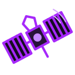

Satellite Security
Pesquisa sobre vulnerabilidades em sistemas de comunicação por satélite.
VER PESQUISA ↗RESEARCH DIVISION
Pesquisa, documentação e análise de superfícies de ataque.
FIELD NOTES
Dos sistemas de satélites à infraestrutura corporativa, cada contexto exige uma forma própria de investigar.

Pesquisa sobre vulnerabilidades em sistemas de comunicação por satélite.
VER PESQUISA ↗Técnicas e ferramentas de exploração de Active Directory e testes em infraestrutura.
VER PUBLICAÇÃO ↗Análise de redes e segurança SCADA/ICS como áreas de interesse técnico.
VER CAPACIDADES ↗FIELD GUIDE / LAB NOTES
Minhas anotações de hacking, organizadas em uma trilha de estudo por assunto.
Aplicações, APIs, injeções, XSS, JWT e proteção de sessão.
ABRIR CAPÍTULO ↗02 / INFRASTRUCTURELDAP, Kerberos, SMB, SMTP e descoberta de rotas.
ABRIR CAPÍTULO ↗03 / IDENTITYHashcat, padrões de senha, arquivos e sessões.
ABRIR CAPÍTULO ↗04 / SPACEMissão, segmentos, TT&C e comunicação.
ABRIR CAPÍTULO ↗PUBLICATIONS / ARCHIVE
Publicações e resumos das pesquisas em andamento.
Uma análise proposta de vulnerabilidades em sistemas de comunicação por satélite, incluindo protocolos e autenticação.
LER RESUMO ↗Entrada sobre métodos de teste em ambientes Active Directory, com foco em movimento lateral e escalonamento de privilégios.
LER RESUMO ↗RESEARCH MINDSET
Uma investigação útil transforma observações em conhecimento que pode ser compartilhado.